Built for Precision. Ready for Complex Work.
Our CNC shop floor brings together advanced machining equipment and experienced operators to produce accurate components for demanding applications. Explore our machines and capabilities below.
Explore Our Machine Fleet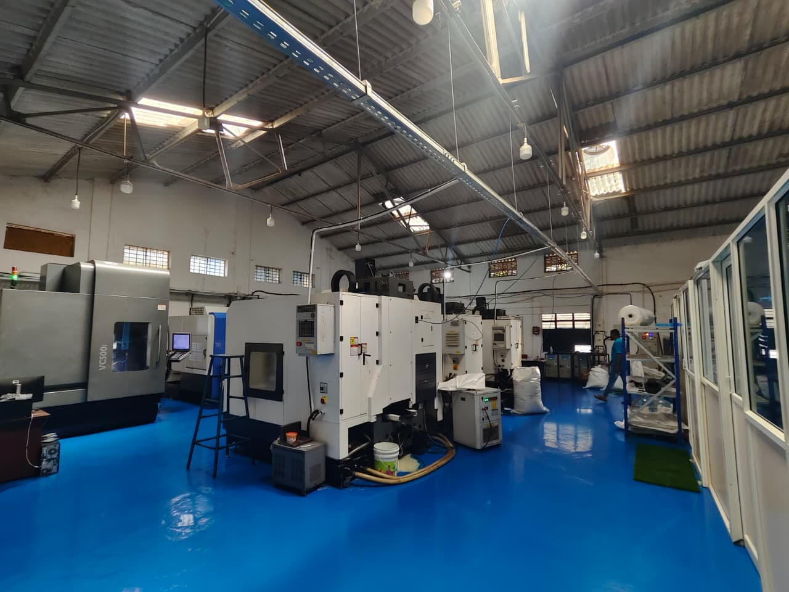
Verified Machine Infrastructure
Our Peenya production floor houses dedicated 5-axis and 3-axis CNC vertical machining centres selected for structural rigidity, positional repeatability, and geometric machining performance.
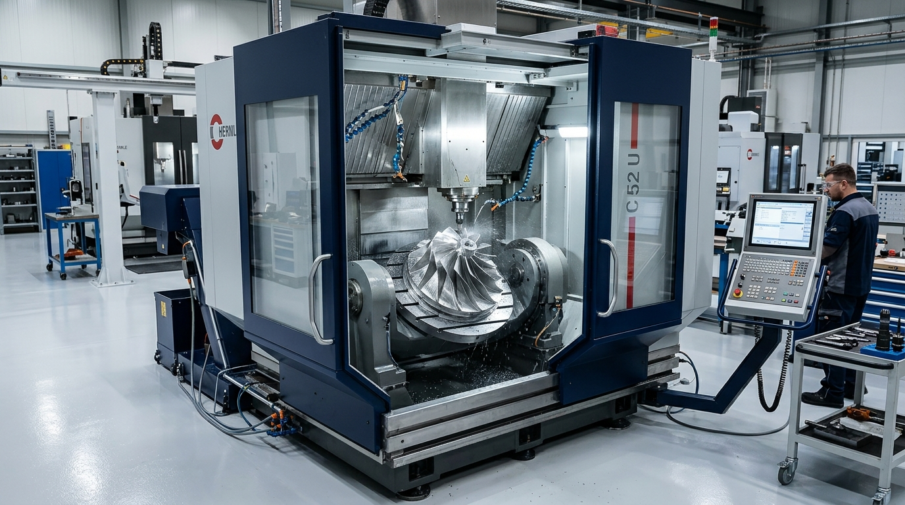
Hurco VC 500i – 5-Axis VMC
Our Hurco VC 500i delivers simultaneous 5-axis machining capability, allowing complex geometries, contoured surfaces, and multi-angle features to be produced in a single clamping setup. Single-setup machining eliminates cumulative datum transfer errors and ensures exacting geometric concentricity across precision aerospace and engineering components.
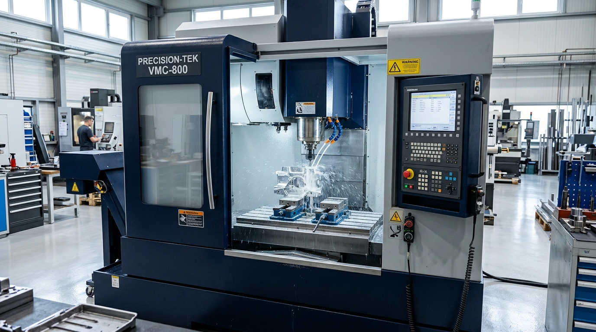
CNC Machining CentreCosmos Emtharangi
Engineered vertical machining platform optimized for precision component milling, prismatic facing, and tight dimensional control across engineered metal alloys.
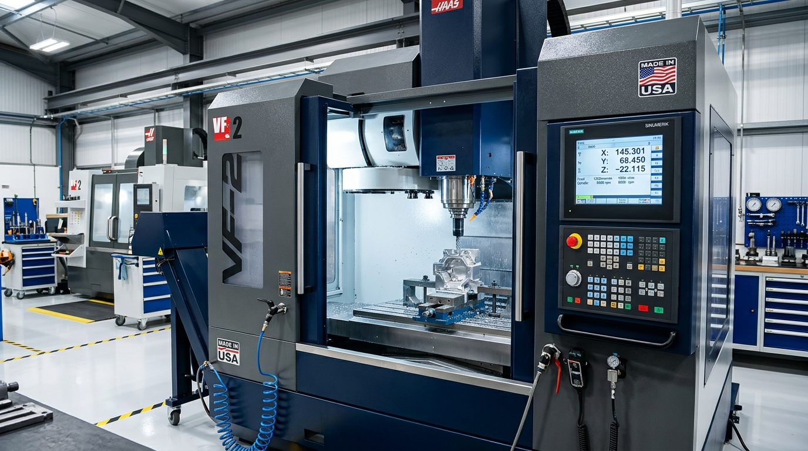
CNC Machining CentreCosmos SM50
High-rigidity vertical machining centre supporting repeatable batch production, multi-cavity pocketing, and reliable surface finishing for critical engineering parts.
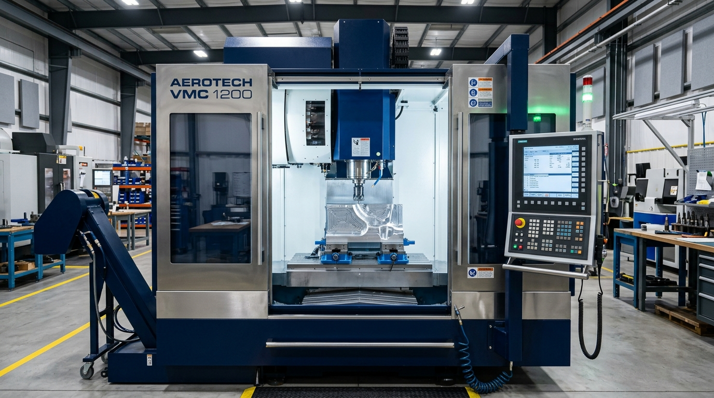
Vertical Machining CentreTwin Horn VMC
Heavy cast construction and precision guideways deliver dampening against machining vibrations, supporting high-accuracy milling and boring operations.
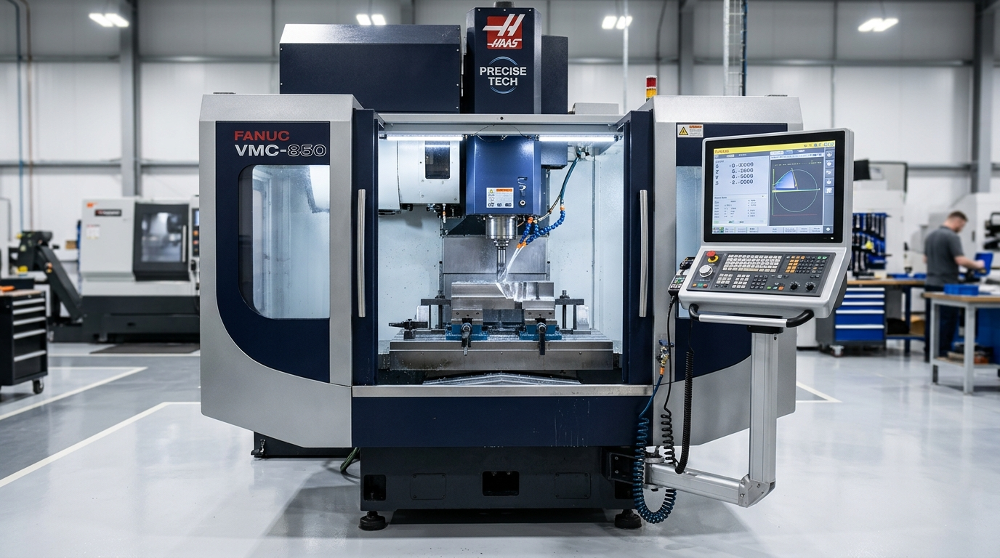
850mm Machining EnvelopeYantrang 850
Substantial working envelope supporting medium-to-large metallic components, structural plates, and multi-component fixture plates with high torque capacity.
Core CNC Machining Capabilities
Our shop floor processes are tailored to deliver tight dimensional tolerances, controlled surface integrity, and efficient batch manufacturing across diverse engineering alloys.
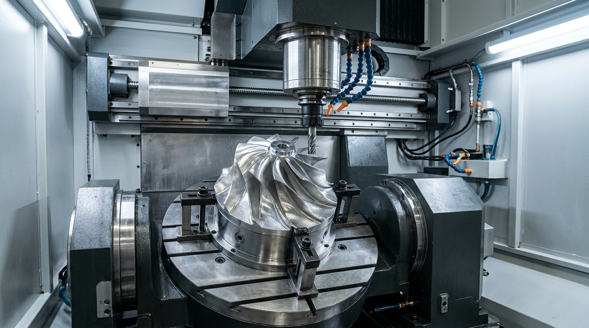
Simultaneous Contouring5-Axis CNC Machining
Enables the machining of complex spatial contours, aerofoil blade profiles, and undercut features through multi-axis synchronized interpolation. Single-setup operations minimize handling errors and maximize positional accuracy.
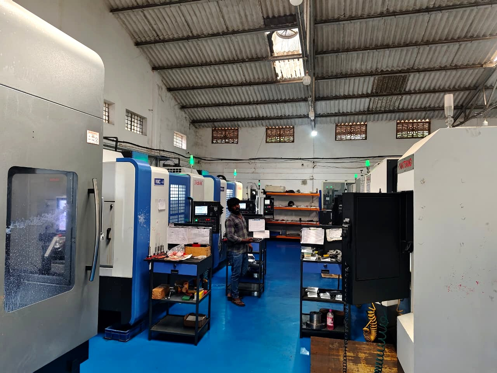
Production Milling3-Axis VMC Machining
Precision vertical milling operations for engineered metallic components. Supports prismatic milling, pocketing, facing, boring, and slotting with high repeatability across batch and prototype production schedules.
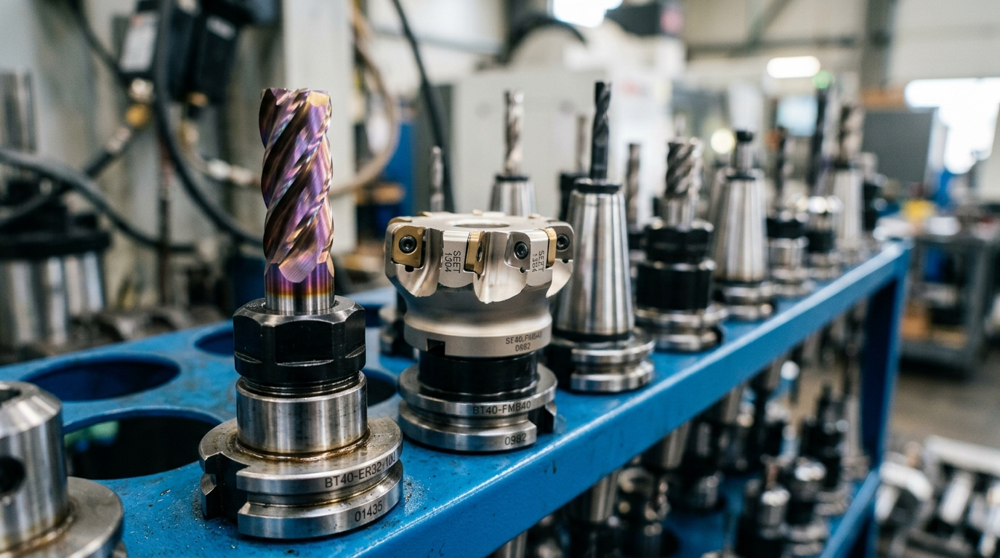
Thread IntegrityCNC Tapping Operations
Synchronized rigid tapping and thread cutting operations for component manufacturing. Accurately cuts internal metric and fine-pitch threads across aluminium, alloy steels, and stainless grades with strict pitch diameter control.
Precision Component Manufacturing
Visual showcase of components manufactured through our 5-axis and 3-axis CNC machining processes, reflecting tight geometric complexity and fine surface finishes.
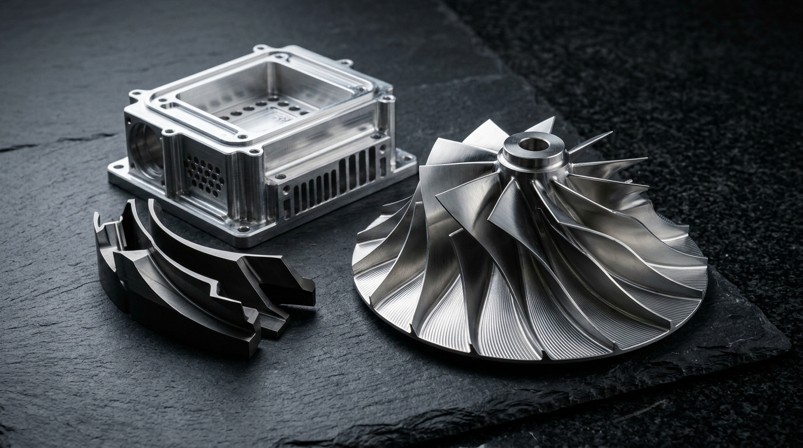
Aerodynamic Impellers & Bladed Rotors
Milled with continuous 5-axis toolpaths, featuring thin aerodynamic twisted blades, balanced hub geometry, and smooth transition fillets without secondary benching.
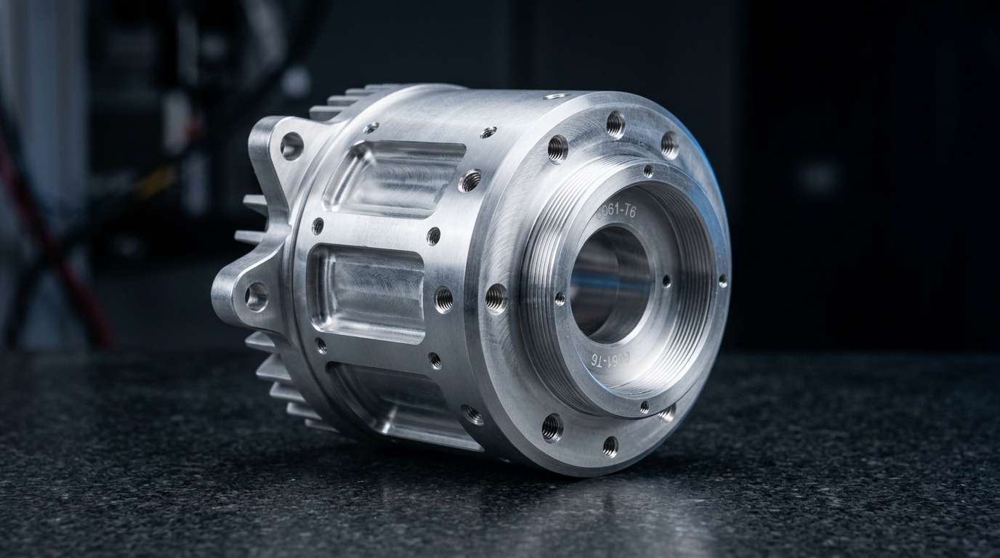
Cylindrical Sensor Housings
Multi-axis turned and milled aerospace enclosure with rectangular pocket bays, mounting flanges, and threaded holes.
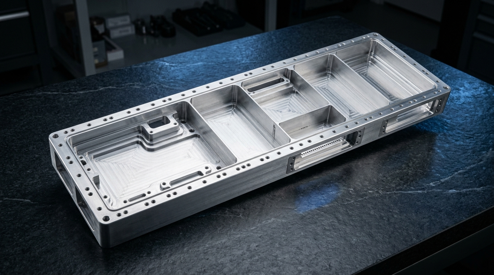
Multi-Bay Electronic Chassis
Deep pocket milling, isolation rib dividers, and high-density fastener patterns for aerospace avionics.
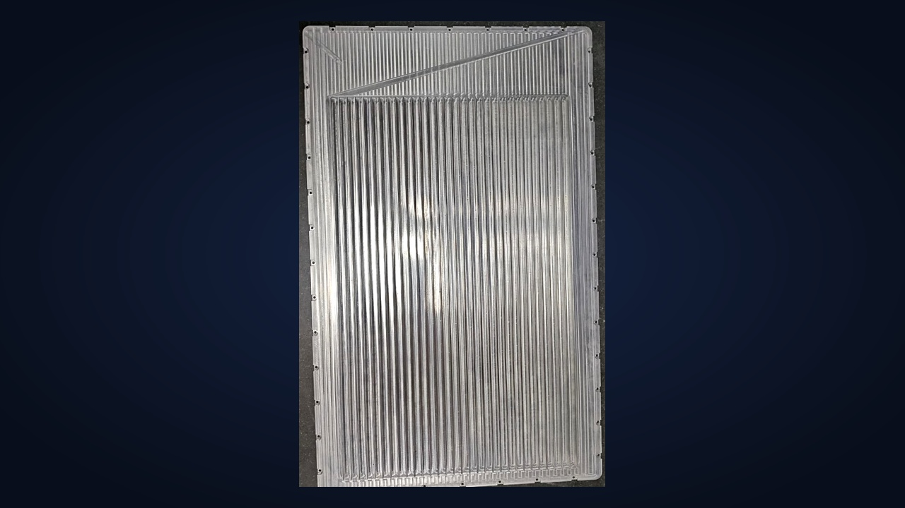
Precision Thermal Cold Plates
High-density micro-fin cooling plates with parallel channels and perimeter vacuum sealing lands.
Precision You Can Measure.
Dimensional quality is the foundation of our manufacturing. Our in-house metrology facility is equipped with verified precision inspection instruments to ensure absolute adherence to client drawings and dimensional limits.
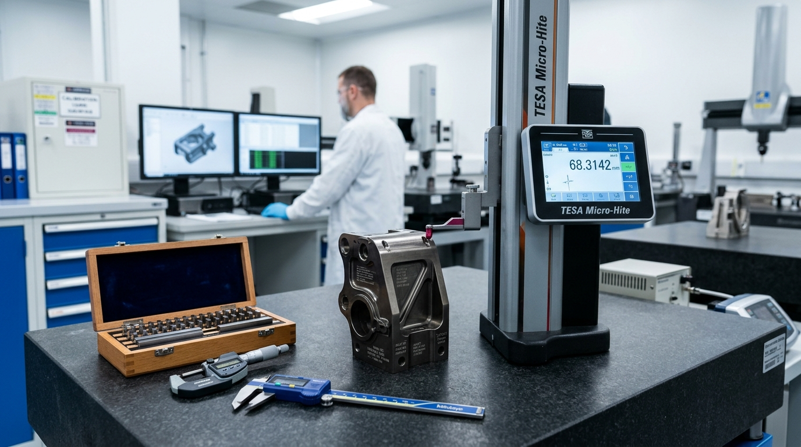
Strict Dimensional Verification: In-process inspection, first-piece validation, and final dimensional audits prior to component dispatch.
Verified In-House Inspection Inventory
We maintain calibrated precision inspection instruments to measure heights, external diameters, internal bores, radii, and plate flatness across all machined parts: